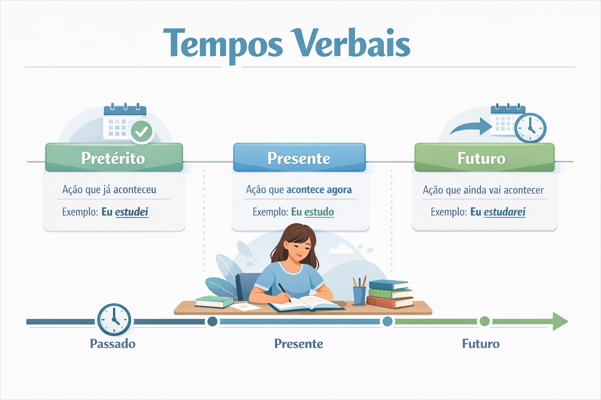

Tempos verbais: o que são, tipos, exemplos e como usar corretamente
Os tempos verbais participam da localização de ações, estados, processos e fenômenos em relação a um momento de referência. Ao dizer “estudo”, “estudei” ou “estudarei”, o falante emprega formas que ajudam a organizar temporalmente o enunciado.
Entretanto, a interpretação não depende apenas da terminação do verbo. Em “Amanhã entrego o trabalho”, por exemplo, entrego está no presente do indicativo, embora a entrega seja projetada para o futuro.
Neste guia, você encontrará os tempos simples e compostos do indicativo e do subjuntivo, explicações sobre o imperativo, exemplos de correlação verbal e um quiz com gabarito comentado.

O que são tempos verbais?
Na descrição gramatical, os tempos verbais são categorias que organizam formas como escrevo, escrevi, escrevia, escreverei. Elas permitem estabelecer relações de simultaneidade, anterioridade e posterioridade.
Muitas vezes, a referência é o momento da fala. Em outras situações, o verbo se relaciona a um ponto temporal mencionado ou pressuposto no texto.
Quando a aula começou, os estudantes já tinham chegado.
- começou: apresenta um acontecimento passado;
- tinham chegado: apresenta uma chegada anterior ao início da aula;
- relação temporal: primeiro ocorreu a chegada; depois, o início da aula.
Não basta, portanto, classificar todos os fatos como “passados”. É necessário reconhecer a ordem e a relação estabelecida entre eles.
Tempo, modo e aspecto verbal: qual é a diferença?
| Categoria | O que ajuda a analisar | Exemplo |
|---|---|---|
| Tempo | A localização da situação em relação a uma referência. | Em “ela chegou ontem”, a chegada é anterior à fala. |
| Modo | A maneira como a situação é apresentada na construção. | “Espero que ela chegue” apresenta a chegada como desejada. |
| Aspecto | Como a situação é apresentada quanto ao seu desenvolvimento e aos seus limites. | “Ela lia quando cheguei” apresenta a leitura em desenvolvimento. |
Essas categorias atuam em conjunto. A diferença entre “li o livro” e “lia o livro”, por exemplo, envolve o modo de apresentar a leitura no passado.
Classificação gramatical e sentido contextual são análises relacionadas, mas diferentes. Uma forma pode estar no presente e referir-se ao futuro, ou estar no futuro e expressar uma suposição sobre o momento atual.
Quais são os modos verbais?
Indicativo
O indicativo é frequentemente empregado para apresentar informações como afirmações: “A escola oferece atendimento”. Contudo, sua presença não comprova que uma informação seja verdadeira nem impede leituras de hipótese ou incerteza.
Em “Onde estará o documento?”, por exemplo, estará pertence ao indicativo, mas pode expressar dúvida sobre a localização atual do documento.
Subjuntivo
O subjuntivo aparece em construções de desejo, hipótese, condição, avaliação e outras relações de dependência: “Espero que ele participe”, “Se ele participasse, contribuiria”.
A definição “modo da dúvida” é insuficiente. Em “Lamento que você esteja doente”, o subjuntivo pode apresentar um fato reconhecido pelo falante, integrado a uma avaliação.
Imperativo
O imperativo é empregado para orientar o comportamento do interlocutor, por meio de ordens, pedidos, conselhos, convites e instruções: “Leia o enunciado”, “Participe da atividade”.
O efeito depende do contexto. “Entre, por favor” pode funcionar como convite; “Não ultrapasse a faixa”, como proibição.
Tempos simples do modo indicativo
1. Presente do indicativo
O presente pode apresentar uma situação atual, um hábito, uma generalização ou outros valores construídos pelo contexto.
- Situação atual: “Neste momento, preciso de silêncio.”
- Hábito: “Estudo à noite todos os dias.”
- Generalização: “Os mamíferos são vertebrados.”
- Referência futura: “Amanhã entrego a atividade.”
Na narração de acontecimentos passados, o presente também pode aproximar os eventos do leitor. Esse emprego é conhecido como presente histórico.
No relato da final de ontem, o narrador reconstrói o lance: o atacante recebe a bola, avança e marca.
“Recebe”, “avança” e “marca” estão no presente, mas representam acontecimentos situados no passado pelo contexto.
2. Pretérito perfeito simples do indicativo
Geralmente apresenta um evento passado como um todo delimitado. É frequente na sequência de acontecimentos de uma narrativa.
- Ontem, eu terminei o relatório.
- A professora entrou, cumprimentou a turma e iniciou a aula.
- Ela morou naquela cidade por dez anos.
O último exemplo mostra que um evento apresentado no perfeito pode ter longa duração. A oposição entre perfeito e imperfeito não equivale simplesmente a “ação rápida” e “ação demorada”.
3. Pretérito imperfeito do indicativo
Pode apresentar hábitos, estados e processos em desenvolvimento no passado. É comum na descrição do cenário em que outro acontecimento ocorre.
- Hábito: “Na infância, eu visitava meus avós aos domingos.”
- Estado: “A sala era pequena e tinha duas janelas.”
- Processo em desenvolvimento: “Eu lia quando o telefone tocou.”
O imperfeito não afirma necessariamente que a situação nunca terminou. Ele a apresenta sem focalizar seus limites naquele trecho do discurso.
4. Pretérito mais-que-perfeito simples do indicativo
Normalmente apresenta um fato anterior a outro momento passado. Suas formas simples, como estudara, fizera, partira, são mais frequentes em registros escritos formais e literários.
Quando cheguei à estação, o trem já partira.
A partida ocorreu antes da chegada. No mesmo contexto, pode-se empregar: “o trem já tinha partido”.
Partira é uma forma simples; tinha partido é uma forma composta.
5. Futuro do presente do indicativo
Pode apresentar uma situação posterior ao momento da fala: “A equipe divulgará os resultados amanhã”. Também pode expressar promessa, determinação ou suposição.
- Projeção futura: “Entregarei o material na sexta-feira.”
- Compromisso: “Voltarei para ajudar.”
- Suposição sobre o presente: “Onde estará a chave agora?”
No último exemplo, estará não indica necessariamente uma localização futura. A pergunta pode buscar a localização atual da chave.
6. Futuro do pretérito do indicativo
Pode apresentar uma situação posterior a um momento passado, uma consequência condicionada ou um pedido atenuado.
- Posterioridade em relação ao passado: “Ela avisou que chegaria no dia seguinte.”
- Consequência hipotética: “Eu viajaria se tivesse recursos.”
- Polidez: “Você poderia repetir a explicação?”
Em “avisou que chegaria”, o aviso fornece uma referência passada, e a chegada é apresentada como posterior a ele. Já em “poderia repetir?”, a forma contribui para suavizar o pedido.
Pretérito perfeito ou imperfeito: como diferenciar?
Pretérito perfeito
Naquele sábado, eu li o relatório.
A leitura é apresentada como um evento delimitado naquele contexto.
Pretérito imperfeito
Eu lia o relatório quando você chegou.
A leitura é apresentada em desenvolvimento no momento da chegada.
Em narrativas, o imperfeito frequentemente constrói o cenário e o perfeito faz avançar os acontecimentos:
A chuva caía, a rua estava vazia e os moradores dormiam. De repente, um carro parou diante da casa.
“Caía”, “estava” e “dormiam” compõem o pano de fundo. “Parou” introduz um acontecimento delimitado na sequência narrativa.
Tempos simples do modo subjuntivo
1. Presente do subjuntivo
Aparece em construções de desejo, avaliação, possibilidade e outras relações sintáticas. Pode referir-se ao presente ou ao futuro.
- Espero que você compreenda a explicação agora.
- Espero que você participe amanhã.
- É importante que a equipe revise o documento.
Em “Espero que participe amanhã”, a forma é presente do subjuntivo, embora a participação seja futura.
2. Pretérito imperfeito do subjuntivo
É empregado, entre outros contextos, em condições hipotéticas e em construções dependentes de uma referência passada. As formas regulares apresentam o segmento -sse-: estudasse, escrevesse, partisse.
- Se eu estudasse mais, compreenderia melhor.
- A professora desejava que os alunos participassem.
- Se amanhã não chovesse, faríamos a visita.
O último exemplo mostra que o nome “pretérito” não obriga a interpretação de passado. A forma integra uma hipótese sobre o dia seguinte.
3. Futuro do subjuntivo
Aparece em construções que apresentam uma situação eventual ou uma condição projetada para o futuro.
- Quando você chegar, avise.
- Se a equipe concluir a análise, publicaremos o resultado.
- Quem precisar de ajuda poderá solicitar atendimento.
“Quando eu fazer” ou “quando eu fizer”?
Em construções como “Quando eu fizer a atividade, avisarei”, a norma-padrão exige o futuro do subjuntivo. Nos verbos regulares, algumas formas coincidem com o infinitivo. Nos irregulares, a diferença fica evidente.
| Verbo | Infinitivo | Futuro do subjuntivo | Exemplo |
|---|---|---|---|
| Estudar | estudar | quando eu estudar | Quando eu estudar o tema, farei o exercício. |
| Fazer | fazer | quando eu fizer | Quando eu fizer o exercício, conferirei a resposta. |
| Ter | ter | se eu tiver | Se eu tiver tempo, participarei. |
| Ver | ver | quando eu vir | Quando eu vir o resultado, avisarei. |
| Vir | vir | quando eu vier | Quando eu vier à escola, trarei o livro. |
| Pôr | pôr | quando eu puser | Quando eu puser os livros na caixa, fecharei a tampa. |
Não identifique o tempo apenas pela presença de “quando” ou “se”. Compare “Quando ele chegou, saímos”, no passado, com “Quando ele chegar, sairemos”, projetado para o futuro.
O modo imperativo possui tempos verbais?
Na classificação escolar, o imperativo é organizado em afirmativo e negativo, sem a divisão em tempos encontrada no indicativo e no subjuntivo.
- Pedido: “Explique novamente, por favor.”
- Conselho: “Revise suas respostas.”
- Convite: “Participe da conversa.”
- Proibição: “Não ultrapasse a faixa.”
Atenção à pessoa do discurso na norma-padrão
| Referência | Afirmativo | Negativo |
|---|---|---|
| Tu | Estuda com atenção. | Não estudes com pressa. |
| Você | Estude com atenção. | Não estude com pressa. |
| Nós | Estudemos com atenção. | Não estudemos com pressa. |
| Vocês | Estudem com atenção. | Não estudem com pressa. |
No português brasileiro falado, há variação no emprego dessas formas. Em exercícios que exigem o paradigma da norma-padrão, observe a pessoa indicada no enunciado.
Tempos simples e compostos: qual é a diferença?
Os tempos simples apresentam uma forma verbal: estudei, estudava, estudarei. Os tempos compostos são construídos com ter ou haver e o particípio do verbo principal: tinha estudado, havia estudado, terei estudado.
Nos tempos compostos, o auxiliar recebe a flexão de pessoa, número, tempo e modo. O particípio permanece invariável: “ela tinha escrito” e “elas tinham escrito”.
Nem toda combinação de verbos é um tempo composto. “Estou estudando” é uma locução progressiva; “vou estudar” pode expressar futuro; “foi escrito” é uma construção passiva.
Tempos compostos do indicativo
| Tempo | Exemplo | Valor no contexto |
|---|---|---|
| Pretérito perfeito composto | Tenho estudado à noite nas últimas semanas. | Repetição ou continuidade em um intervalo que alcança o presente. |
| Pretérito mais-que-perfeito composto | Quando a aula começou, eu já tinha estudado o capítulo. | Anterioridade em relação a um momento passado. |
| Futuro do presente composto | Até sexta-feira, terei concluído o trabalho. | Conclusão projetada até um ponto futuro. |
| Futuro do pretérito composto | Se tivesse recebido os dados, teria concluído o trabalho ontem. | Resultado hipotético apresentado como não realizado nesse contexto. |
“Estudei” e “tenho estudado” são equivalentes?
No português brasileiro, essas formas geralmente não são intercambiáveis sem mudança de sentido.
- Estudei o capítulo ontem. — Apresenta um evento delimitado no passado.
- Tenho estudado esse assunto ultimamente. — Sugere recorrência ou continuidade no período recente.
Por isso, o pretérito perfeito composto não deve ser definido apenas como “ação concluída”. Sua interpretação depende da construção, do verbo empregado e das expressões temporais.
Tempos compostos do subjuntivo
| Tempo | Exemplo | Relação no contexto |
|---|---|---|
| Pretérito perfeito composto | Espero que você tenha compreendido a explicação. | A compreensão é apresentada como anterior ao momento da expectativa. |
| Pretérito mais-que-perfeito composto | Se eu tivesse estudado o tema, teria respondido melhor. | Condição passada não realizada na interpretação apresentada. |
| Futuro composto | Quando eu tiver concluído a revisão, enviarei o texto. | A conclusão da revisão é projetada como anterior ao envio futuro. |
Em “Quando eu tiver concluído a revisão, enviarei o texto”, os dois acontecimentos são projetados para o futuro, mas a forma composta destaca que a revisão estará concluída antes do envio.
Infinitivo, gerúndio e particípio são tempos verbais?
Na classificação escolar, são formas nominais do verbo, e não tempos como presente ou pretérito perfeito.
- Infinitivo: estudar, escrever, partir.
- Gerúndio: estudando, escrevendo, partindo.
- Particípio: estudado, escrito, partido.
Elas podem integrar locuções ou organizar orações reduzidas. Sua interpretação temporal depende das relações estabelecidas no enunciado. O gerúndio, por exemplo, não indica presente por si só:
- Ontem, eu estava estudando às oito.
- Amanhã, às oito, eu estarei estudando.
A forma estudando aparece nas duas construções, mas o conjunto é situado em momentos diferentes.
O que é correlação verbal?
A correlação verbal é a articulação entre formas verbais para construir relações coerentes de tempo, condição, hipótese e dependência entre os enunciados.
Isso não significa empregar o mesmo tempo em todo o texto. Tempos diferentes são necessários quando se pretende distinguir acontecimentos, descrever cenários ou apresentar hipóteses.
Condição futura e consequência projetada
Se eu estudar, compreenderei melhor.
“Estudar” está no futuro do subjuntivo. “Compreenderei” está no futuro do presente do indicativo.
Condição hipotética e consequência condicionada
Se eu estudasse, compreenderia melhor.
“Estudasse” está no pretérito imperfeito do subjuntivo. “Compreenderia” está no futuro do pretérito do indicativo.
Condição passada não realizada
Se eu tivesse estudado, teria compreendido melhor.
A construção apresenta uma condição e seu resultado como não realizados na situação considerada.
Esses pares são modelos frequentes de correlação, não uma lista exaustiva de todas as combinações possíveis. O contexto pode justificar outras articulações.
Como os tempos funcionam no discurso indireto?
Ao relatar uma fala a partir de uma referência passada, o narrador pode reorganizar os tempos e as expressões temporais.
Discurso direto
Ana afirmou: “Entregarei o trabalho amanhã”.
Discurso indireto
Ana afirmou que entregaria o trabalho no dia seguinte.
No segundo enunciado, a entrega é posterior ao momento passado em que Ana fez a afirmação. Essa relação favorece o emprego do futuro do pretérito.
A reorganização não deve ser feita mecanicamente: o momento em que o relato é produzido e a permanência da informação podem justificar outras escolhas.
Como identificar o tempo verbal passo a passo?
- Localize o verbo ou a locução: observe se há auxiliar e particípio.
- Identifique o infinitivo: reconheça de qual verbo a forma se origina.
- Examine a flexão: considere pessoa, número, tempo e modo.
- Observe a estrutura: formas compostas exigem analisar o auxiliar e o conjunto.
- Localize a referência temporal: procure datas, advérbios e acontecimentos relacionados.
- Interprete o valor: verifique se há hábito, processo em curso, anterioridade, hipótese ou outro sentido.
Análise de um exemplo
Quando a professora chegou, os alunos já tinham organizado a sala.
- chegou: pretérito perfeito do indicativo de chegar;
- tinham organizado: pretérito mais-que-perfeito composto do indicativo de organizar;
- tinham: auxiliar na terceira pessoa do plural;
- organizado: particípio invariável no tempo composto;
- relação temporal: a organização da sala é anterior à chegada;
- já: reforça que a organização estava realizada naquele ponto passado.
Erros frequentes no estudo dos tempos verbais
- Confundir tempo e modo: indicativo é modo; pretérito perfeito é tempo.
- Definir indicativo como garantia de verdade: a classificação não comprova a veracidade da informação.
- Reduzir subjuntivo à dúvida: ele também aparece em desejos, avaliações e outras construções.
- Tratar imperfeito como fato que nunca terminou: a forma pode apenas não focalizar os limites da situação.
- Identificar futuro do subjuntivo como infinitivo: “quando eu fizer” não equivale à forma “fazer”.
- Confundir ver e vir: emprega-se “quando eu vir o resultado” e “quando eu vier à escola”.
- Chamar toda locução de tempo composto: “estava lendo” e “tinha lido” têm estruturas diferentes.
- Supor que todo presente indica agora: “amanhã entrego” tem referência futura.
- Evitar qualquer alternância temporal: mudanças de tempo podem ser necessárias para construir o sentido.
Quiz sobre tempos verbais
Marque uma alternativa por questão. Observe tanto a classificação das formas quanto o sentido produzido no contexto.
1. Em “Amanhã entrego o relatório”, a forma “entrego” está:
2. Em “Eu lia quando o telefone tocou”, a oposição entre “lia” e “tocou” apresenta:
3. Em “Quando cheguei, a equipe já concluíra o trabalho”, “concluíra” pode ser substituído, preservando a relação temporal central, por:
4. Em “Tenho estudado esse assunto nas últimas semanas”, a forma composta sugere:
5. Assinale a alternativa que completa adequadamente: “Quando eu _____ o resultado e _____ à escola, conversarei com a professora”.
6. Em “Se eu tivesse recebido o aviso, teria participado da reunião”, as formas destacadas são, respectivamente:
7. Em “Onde estará minha chave agora?”, o futuro do presente pode expressar:
8. Qual alternativa preserva o sentido central de “Ana afirmou: ‘Entregarei o trabalho amanhã’” ao relatar a fala a partir daquele momento passado?
9. Em “Quando eu tiver concluído a revisão, enviarei o texto”, a forma “tiver concluído” apresenta:
10. Em uma instrução dirigida a “você”, qual alternativa apresenta o imperativo negativo conforme o paradigma da norma-padrão?
Resumo dos tempos verbais
- O tempo verbal participa da localização de uma situação em relação a uma referência.
- O contexto pode atribuir à forma verbal um valor diferente de seu emprego mais habitual.
- O indicativo apresenta seis tempos simples na classificação escolar.
- O subjuntivo apresenta presente, pretérito imperfeito e futuro simples.
- O imperativo é organizado em afirmativo e negativo, sem divisão escolar em tempos.
- O perfeito simples geralmente apresenta um evento passado como delimitado.
- O imperfeito pode apresentar hábito, estado ou processo em desenvolvimento no passado.
- O mais-que-perfeito normalmente apresenta anterioridade em relação a outro momento passado.
- Os tempos compostos são construídos com ter ou haver e particípio.
- “Tenho estudado” frequentemente sugere recorrência ou continuidade no período recente.
- O futuro do subjuntivo exige atenção aos irregulares: fizer, tiver, vir, vier, puser.
- A correlação verbal organiza relações coerentes entre fatos, hipóteses e referências temporais.
Conclusão
Dominar os tempos verbais envolve reconhecer as formas e compreender as relações que elas constroem. Uma narrativa pode alternar perfeito e imperfeito para distinguir acontecimentos e cenários; uma argumentação pode combinar subjuntivo e futuro do pretérito para apresentar hipóteses.
Ao revisar um texto, observe a referência de cada situação e a coerência entre os acontecimentos. A escolha do tempo deve ajudar o leitor a compreender o que ocorreu, o que estava em desenvolvimento, o que depende de uma condição e o que é projetado para outro momento.
Perguntas frequentes sobre tempos verbais
Qual é a diferença entre tempo e modo verbal?
O tempo participa da localização da situação em relação a um momento de referência. O modo contribui para a maneira como ela é apresentada, em articulação com a construção e o contexto.
Qual é a diferença entre pretérito perfeito e imperfeito?
O perfeito simples geralmente apresenta o evento passado como um todo delimitado. O imperfeito pode apresentar uma situação habitual, em desenvolvimento ou de fundo no passado.
O que é o pretérito mais-que-perfeito?
É um tempo que normalmente apresenta um fato anterior a outro momento passado, como em “Quando cheguei, ela já saíra” ou “já tinha saído”.
O presente pode indicar futuro?
Sim. Em “Amanhã entrego o trabalho”, “entrego” está no presente do indicativo, mas o contexto atribui à situação uma referência futura.
O imperativo tem tempos como presente e pretérito?
Na classificação escolar, o imperativo é organizado em afirmativo e negativo, sem a divisão em tempos encontrada no indicativo e no subjuntivo.
Continue estudando Gramática
Referências e leituras de aprofundamento
- BECHARA, Evanildo. Moderna gramática portuguesa. Rio de Janeiro: Nova Fronteira.
- CUNHA, Celso; CINTRA, Lindley. Nova gramática do português contemporâneo. Rio de Janeiro: Lexikon.
- CEGALLA, Domingos Paschoal. Novíssima gramática da língua portuguesa. São Paulo: Companhia Editora Nacional.
- ROCHA LIMA, Carlos Henrique da. Gramática normativa da língua portuguesa. Rio de Janeiro: José Olympio.
- Ciberdúvidas — Regra para distinguir o futuro do conjuntivo do infinitivo pessoal . Na terminologia portuguesa, “conjuntivo” corresponde a “subjuntivo”.
Explore Outros Conteúdos
Continue seus estudos acessando outras seções do site Mestre Kira: